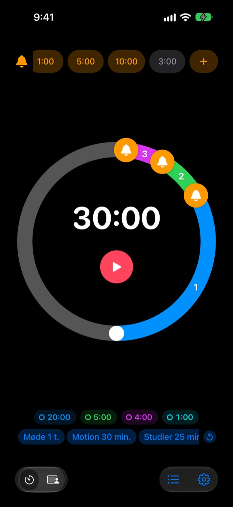
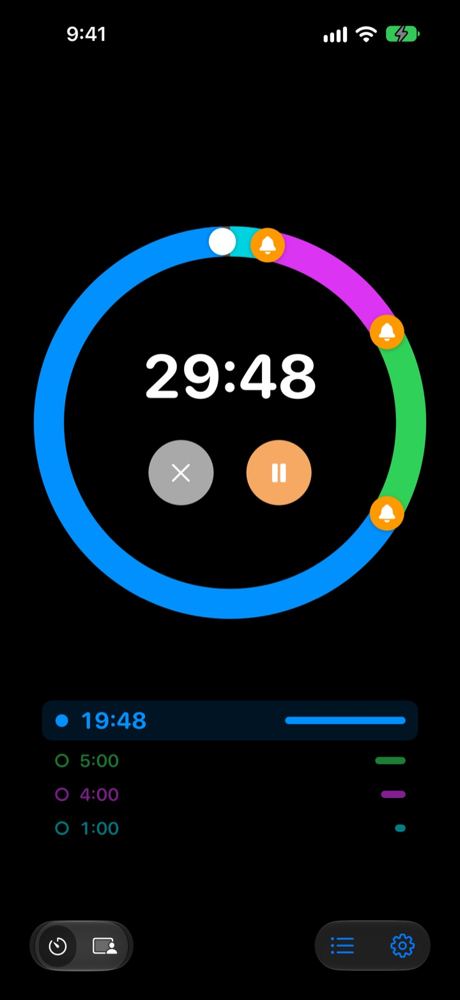
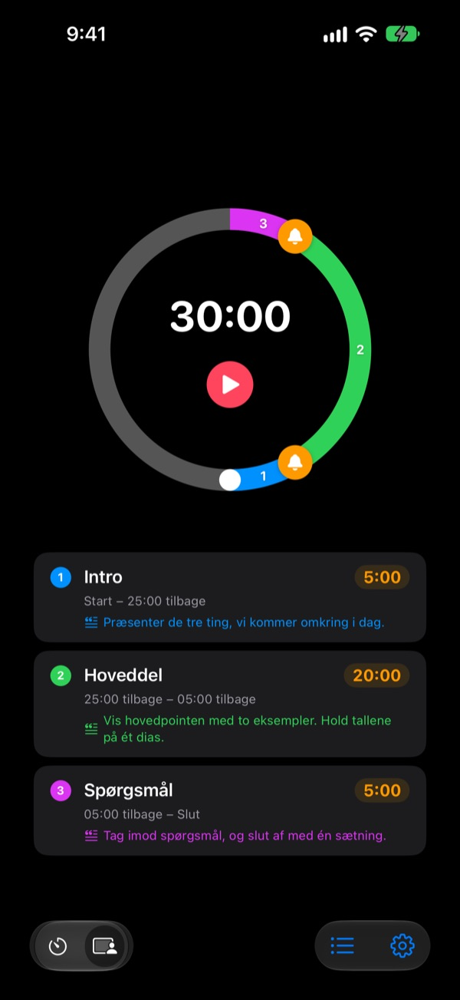
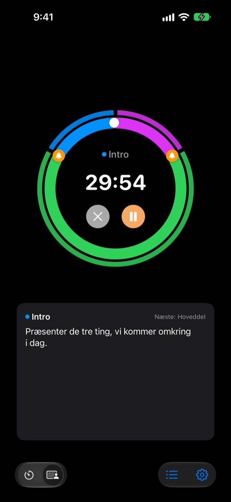

Ikke når det er slut,
men før
5 minutter før oplægget slutter, 3 før mødet runder af. Rereminder siger til ved hvert punkt, du vælger, så du ikke behøver kigge på uret hele tiden.
Forvarsler er gratis og uden grænse. Til iPhone, Apple Watch og Mac.

Prøv det her
Vælg en længde og dine forvarsler, og tryk på den røde knap. Et minut går på et sekund, og hvert forvarsel lyder, når det er dets tur.
Har din timer nogensinde ringet, da det var for sent?
En almindelig timer ringer først ved nul. Oplægget slutter, før du når konklusionen, timen stopper uden opsamling, og mødet glider ind i det næste uden en beslutning. Du har ikke brug for et signal om, at tiden er gået, men et prik på skulderen, mens der stadig er tid til at runde af.
Forvarsler før slut, så mange du vil
Træk klokkerne på skiven hen til 10, 5 eller 1 minut før slut, eller hvor som helst. Der er ingen grænse, og hvert forvarsel kan have sin egen besked, fx „Rund slides af“.
Med skærmen slukket kan du stadig se resttiden på låseskærmen og i Dynamic Island, og dit Apple Watch prikker dig på håndleddet.

Del dit oplæg op i afsnit
Intro 5 minutter, hoveddel 20, spørgsmål 5. Giv hvert afsnit et navn og et manuskript. Hver gang afsnittet skifter, får du et forvarsel med dets navn, og din tidsplan holder næsten af sig selv. (Pro)

Det, du skal sige nu, står på skærmen
Mens den kører, ser du manuskriptet til det aktuelle afsnit og det næste med store bogstaver. Går du over nul, tæller den videre, så du ved præcis, hvor meget du løb over. (Pro)

Kom i gang på tre trin
- 1
Indstil tiden
Drej skiven, eller tryk på tiden og skriv den. Én omgang er 60 minutter, to omgange 120.
- 2
Sæt forvarsler
Tryk på en mærkat som 1:00 eller 5:00 øverst, eller træk en klokke ind på skiven.
- 3
Start og glem det
Lås din iPhone. iPhone og Apple Watch siger til ved hvert punkt, du har sat.
De mest brugte opsætninger
- Oplæg på 20 minutter
- 5 min før „Gå til konklusionen“, 1 min før „Sig tak“
- Undervisningstime på 45 minutter
- 10 min før „Forklar lektier“, 3 min før „Opsamling“
- Møde på 30 minutter
- 5 min før „Bekræft beslutningerne“
- Pilates- eller yogatime
- Sessionstilstand med ét afsnit pr. serie (Pro)
- Læsning i 25 minutter
- 5 min før, derefter pause
- 3 minutters pause mellem sæt
- 30 sek. før „Gør klar til næste sæt“
- Mentorsamtale på en time
- 15 og 5 min før
Gem det, du bruger tit, som skabelon, og start det med ét tryk (fra Husk og op). Du kan også starte eller stoppe en timer med Genveje og Siri.
Forvarsler er gratis. Betal kun, hvis den skal huske noget.
Gratis
- Ubegrænset antal forvarsler
- Din egen besked på hvert forvarsel
- Live Activity på låseskærmen og i Dynamic Island
- Bliv ved, til du reagerer, og slut med en rigtig alarm
- App til Apple Watch og menulinjen på Mac
- Alle temafarver
Husk · Pro
- Husk: gem opsætninger som skabeloner og start dem med ét tryk
- Husk: åbn appen igen, og alt er, som du forlod det
- Pro: alt fra Husk plus sessionstilstand med afsnitsnavne og manuskripter
- Pro: overtid, historik og statistik
For hver plan vælger du årligt abonnement eller et engangskøb for altid. Du kan prøve sessionstilstand, overtid og historik et par gange, før du betaler.
Ingen reklamer. Ét Evighedspas åbner desuden alle Leeos apps.
Ofte stillede spørgsmål
Et forvarsel lød ikke.
Det er næsten altid tilladelser eller fokus. Tjek tilladelsen til notifikationer i appen under Indstillinger › Notifikationsmetode. Bruger du fokus, så tilføj Rereminder som tilladt app i iOS-indstillinger › Fokus. I lydløs tilstand får du kun vibration. Står Rereminder under Indstillinger › Notifikationer › Planlagt oversigt, bliver notifikationerne holdt tilbage, så tag den ud derfra.
Opdager jeg slutningen i lydløs tilstand?
Ja. Slå „Slut med en rigtig alarm“ til, så ringer den højt, også i lydløs tilstand eller med fokus. Med „Bliv ved, til jeg reagerer“ bliver den ved, til du trykker på Stop eller Slumre i notifikationen.
Mit Apple Watch synkroniserer ikke.
Åbn Indstillinger › Mine enheder i appen. Der kan du se, hvilket trin der mangler. Uret skal være parret med denne iPhone, Rereminder skal være installeret på uret, og du skal åbne den én gang på uret efter installationen. Derefter kommer timeren over, også når appen på uret er lukket.
Min Mac står som ikke forbundet.
„Forbundet“ betyder, at appen var åben på den Mac inden for de seneste 10 minutter, så en Mac, der lige er vågnet, dukker op et par minutter senere. Begge enheder skal bruge samme iCloud-konto med iCloud Drive slået til. Mac-appen kræver macOS 26 eller nyere.
Jeg har betalt, men intet er låst op.
Tryk på „Gendan køb“ på skærmen med planer, logget ind med den samme Apple-konto, som du betalte med. Køb for altid kommer tilbage, selv hvis du sletter appen eller skifter enhed.
Mine gemte skabeloner er låst.
De er der stadig. Uden Husk eller Pro bliver de synlige, men låste, og de åbner igen, så snart du køber en af dem.
Hvordan får jeg pengene tilbage?
Apple står for refusioner. Anmod om det på reportaproblem.apple.com med den Apple-konto, du betalte med. Hvis noget var i stykker, så sig det også til mig, så den næste ikke rammes af det samme.
Kan jeg prøve den uden at installere?
Åbn m1zz.github.io/rereminder på din iPhone, så kører timeren med det samme som App Clip. Skiven og forvarslerne er med. Skabeloner, sessionstilstand og appen til uret findes i den fulde app.
Hvilke enheder virker den på?
iPhone med iOS 26 eller nyere, Apple Watch med watchOS 11.6 eller nyere og Mac med macOS 26 eller nyere. iPad understøttes endnu ikke. Appen findes på 24 sprog.
Hvor bliver mine data af?
Timere, skabeloner, afsnitsnavne, manuskripter og historik bliver på din enhed og forsvinder, når du sletter appen. Appen sender kun anonym brugsstatistik, der hjælper med at forbedre den. Privatlivspolitikken siger præcis hvilken.
Spørgsmål eller feedback? Skriv til leeo@kakao.com. Jeg svarer som regel inden for 2 til 3 dage.